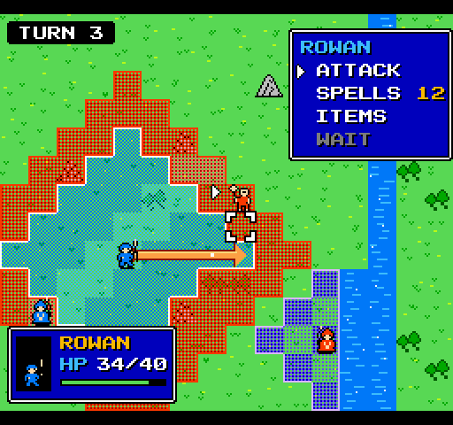
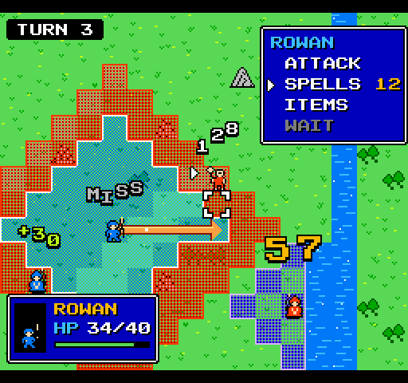
8-bit console pixel
A screen that could have come out of an 8-bit home console: a 256×240 picture built from 8×8 cells and 16×16 tiles, a fixed master palette.
Art styles
Elements that draw their own windows, numbers and ranges can take any of these looks. Hover a style to see a second scene. Copy its style prompt, or set it in the basket and the combined prompt starts with it.


A screen that could have come out of an 8-bit home console: a 256×240 picture built from 8×8 cells and 16×16 tiles, a fixed master palette.
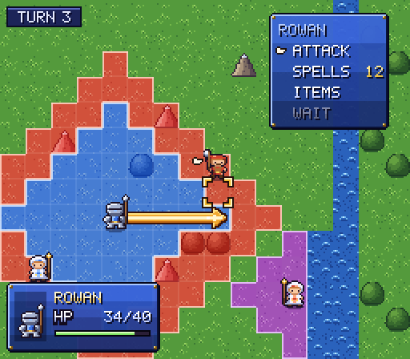
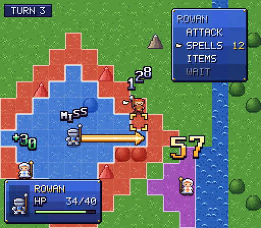
The look every element demo on this site uses: a native 256×224 canvas, integer-scaled, hand-authored palette sprites with 3–5 shade steps, three or more parallax layers.
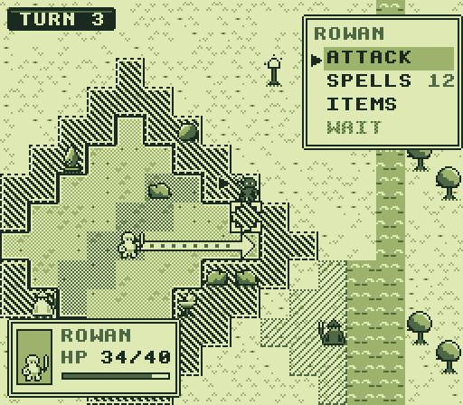
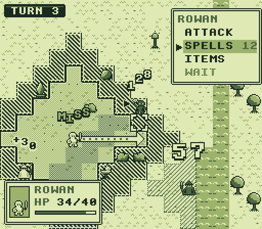
An early monochrome handheld: the whole picture uses exactly four shades of one ramp (S0 lightest, S1, S2, S3 darkest), built from 8×8 cells, with 1 px outlines in S3.
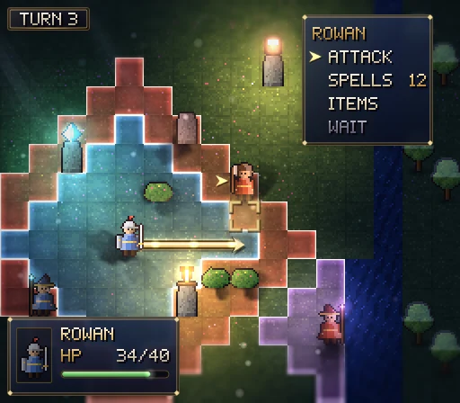
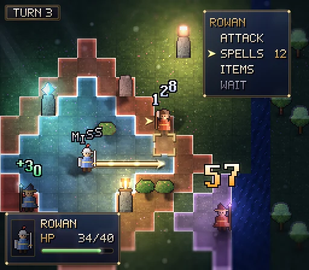
A small lit stage.
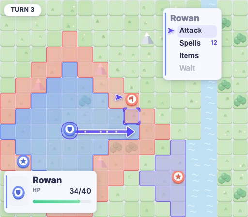
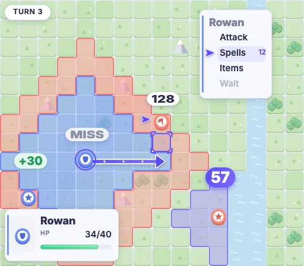
A modern mobile-strategy board: pastel geometric tiles that sit a little proud of the ground, round two-tone tokens, white rounded cards floating on soft shadows.
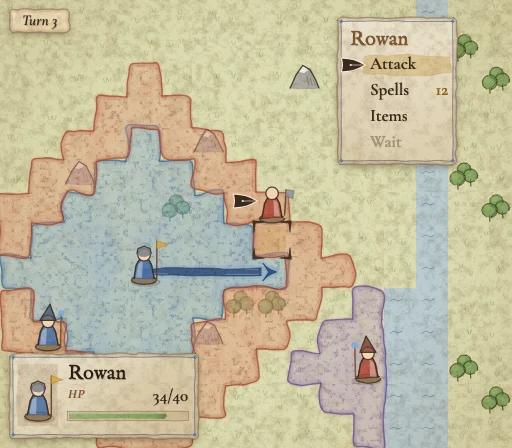
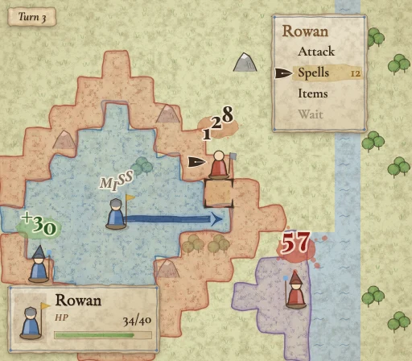
One physical page.
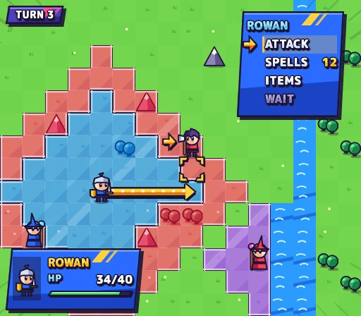
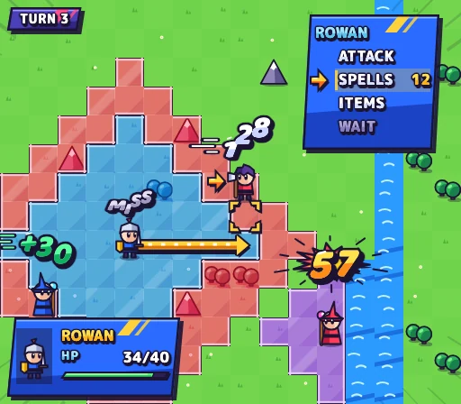
A TV-anime battle screen: flat saturated colour, every shape closed by a bold dark-violet ink line, exactly one hard shadow tone per colour.
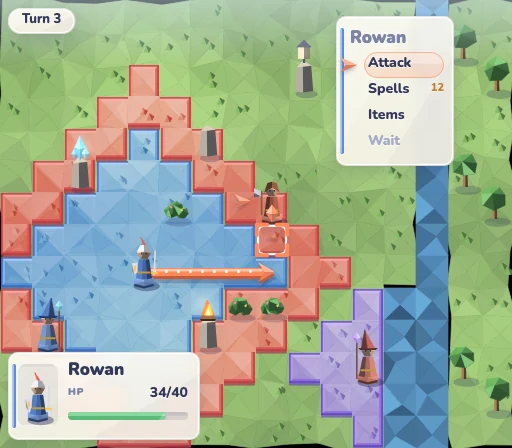
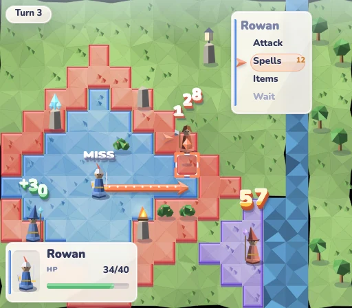
A tabletop model seen from above at a slight tilt.
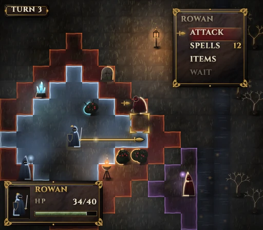
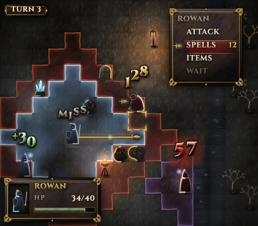
A candle-lit crypt painted in oils.
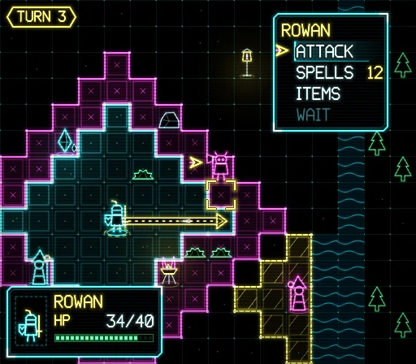
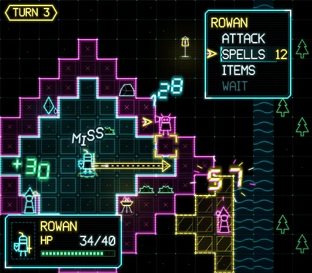
A vector-display arcade cabinet: everything is a thin line of light on a black tube.
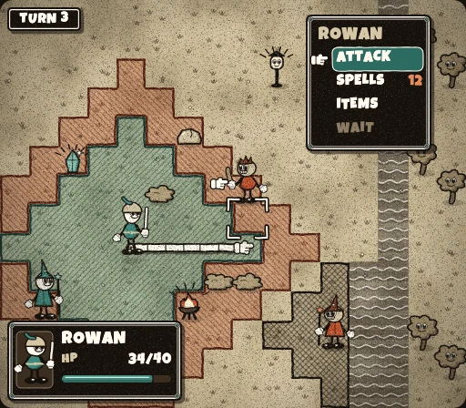
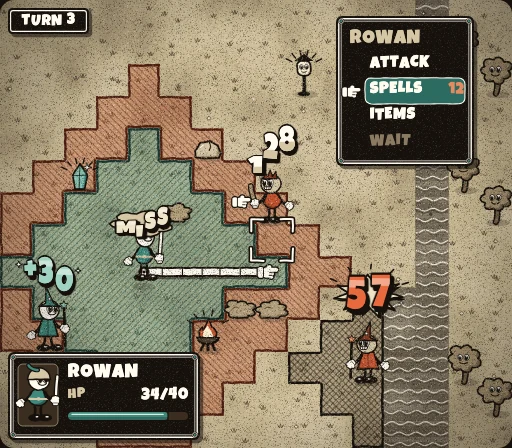
An early sound-cartoon reel printed in sepia.
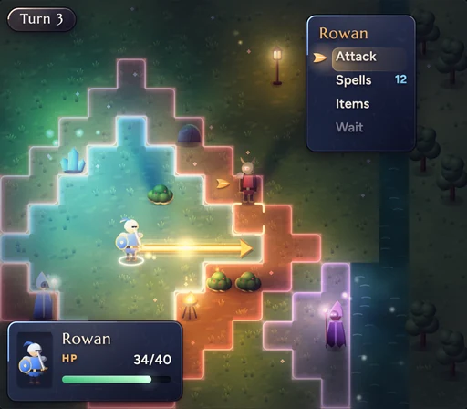
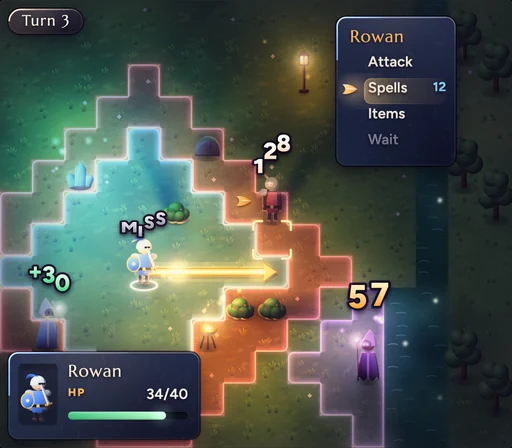
A painted world that light falls on.
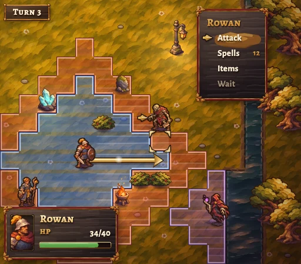
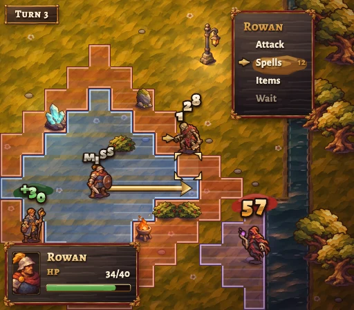
Paint you can feel.
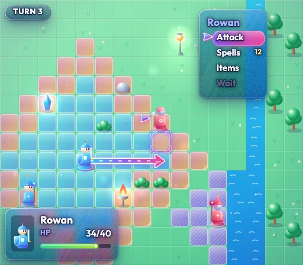
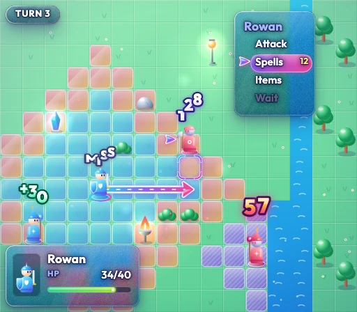
Glassmorphism HUD (blurred backdrop + indigo tint + sheen + gradient rim), candy-bright gradients on everything interactive, rounded everything, one crisp geometric sans.